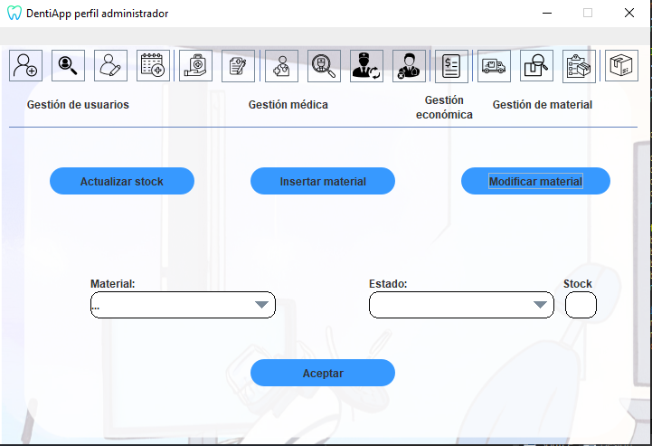

Ayuda: Modificar Material
Los siguientes pasos le guiarán a través del proceso de modificar
el estado de un material (Alta/Baja) :
- Seleccionar el material a actualizar: Seleccionar en el desplegable
(Material) el material del que queremos cambiar el estado.
- Seleccione el estado: Después de especificar el material,
seleccione en el desplegable (Estado) el estado en el que queremos poner el material.
- Campo stock: Muestra la cantidad de material antes de modificar su estado.
- Cambiar estado: Una vez que haya agregado el material
deseado y
el estado, haga clic en el botón "Aceptar" para cambiar
el estado del material especificado.

Si tiene alguna pregunta o necesita ayuda adicional,
no dude en comunicarse con nosotros.